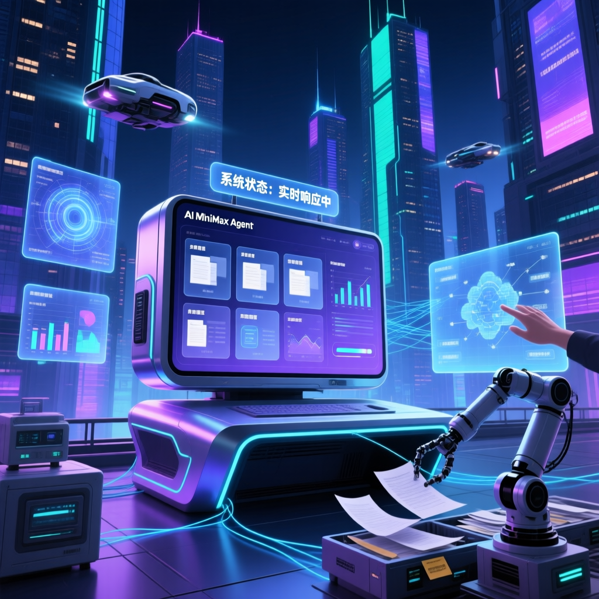

近期AI技術的進步為工作流程帶來革命性變革。MiniMax Agent基於最新M2.7模型開發，能自動完成選題調研、內容創作、檔案整理等多種任務，成為本地AI應用的新選擇。

在AI Agent市場競爭日益激烈的當下，MiniMax推出了基於M2.7模型的通用Agent平台。與市場上其他產品相比，MiniMax Agent主打「免費可用」與「良好中文支援」兩大優勢，更支援本地執行模式以保護用戶資料隱私。本文將深入探討這款工具的核心功能與實際使用體驗。
M2.7能自行構建複雜的Agent Harness，完成高度複雜的生產力任務，實現「自己造工具」的突破。
對Excel/PPT/Word複雜編輯能力顯著提升，能自動處理複雜文件格式，節省大量時間。
支援直接在本地環境執行，保護用戶資料隱私，滿足企業級安全需求。
在40個複雜Skills（>2000 Token）的測試中，仍能保持97%的Skills遵循率，展現穩定的推理能力。
| 特性 | M2.5 | M2.7 |
|---|---|---|
| Agent能力 | 基礎Agent框架 | 自構Agent Harness |
| 複雜任務遵循率 | 約90% | 97%（40+複雜Skills） |
| Office處理 | 基礎編輯能力 | 多輪修改+高保真編輯 |
| GDPval-AA ELO | 約1400 | 1495（開源最高） |
| 自我進化 | 無 | 可自動優化工作流程 |
隨著AI技術不斷進步，未來工作方式將發生深刻變革。MiniMax Agent作為整合多種功能的AI工具，有望成為更多用戶的選擇。業界建議MiniMax公司繼續優化功能，擴充應用範圍，並加強與各行業合作以滿足專業需求。本地執行模式也將成為其競爭優勢。
「MiniMax Agent目前免費可用，中文支援良好，適用範圍廣泛。在MiniMax內部研發場景中，M2.7已能承擔30%-50%的工作量，展現強大的實際應用價值。」